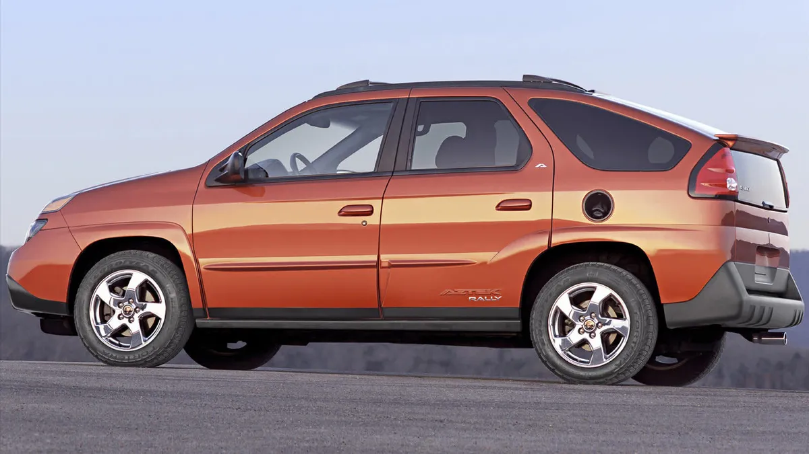

Introduction
Welcome to my personal page! My name is Sebastian Adams, and I am excited to share a bit about myself with you.
My Interests
Sports! As a chicago native, SPORTS(!) play a large part of my life. It's not uncommon for people to refer to me as the number one fan of the Chicago Blackhawks. People sometimes say I talk to much about too much, but I disagree.

My Favorite Music
Without a doubt, my favorite music genre is 90s country music. I just think no one did it better than Tim Mcgraw!"

My Favorite Restaurants
H̶e̶r̶e̶'̶s̶ ̶a̶ ̶p̶i̶c̶t̶u̶r̶e̶ ̶f̶r̶o̶m̶ ̶o̶n̶e̶ ̶o̶f̶ ̶m̶y̶ ̶f̶a̶v̶o̶r̶i̶t̶e̶ ̶r̶e̶s̶t̶a̶r̶a̶u̶n̶t̶s̶.̶ ̶I̶ ̶s̶h̶o̶u̶l̶d̶n̶'̶t̶ ̶s̶p̶e̶a̶k̶ ̶s̶p̶e̶c̶i̶f̶i̶c̶s̶ ̶(̶d̶u̶e̶ ̶t̶o̶ ̶t̶h̶e̶ ̶n̶a̶t̶u̶r̶e̶ ̶o̶f̶ ̶m̶y̶ ̶v̶i̶s̶i̶t̶ ̶w̶h̶e̶n̶ ̶I̶ ̶f̶i̶r̶s̶t̶ ̶a̶t̶e̶ ̶h̶e̶r̶e̶)̶ ̶b̶u̶t̶ ̶I̶'̶m̶ ̶s̶u̶r̶e̶ ̶i̶t̶ ̶w̶o̶u̶l̶d̶ ̶b̶e̶ ̶s̶a̶f̶e̶ ̶t̶o̶ ̶j̶u̶s̶t̶ ̶p̶o̶s̶t̶ ̶a̶ ̶p̶i̶c̶t̶u̶r̶e̶ ̶o̶f̶ ̶m̶y̶ ̶f̶o̶o̶d̶.̶.̶ ̶R̶i̶g̶h̶t̶?̶ ̶[̶F̶l̶a̶g̶ ̶2̶:̶ ̶"̶y̶u̶m̶m̶y̶ ̶p̶a̶s̶t̶a̶"̶]̶ ̶
as it turns out... Even posting that picture is a problem. So i had to delete it. I'm not sure why the person i met with is so secretive.. its like he's in hiding or something.. I don't get it, this was all the way back in 2022.
Regardless, the location is beautiful.. I'd sure love to stay in one of these nearby resorts. The person I met seems like he practically lived in one lately it seems.. he says the statue on the property reminds him on he felt about the market... whatever that means.
My Favorite Car!
An iconic example of human engineering... The Pontiac Aztek. There has never been a more attractive car ever made. My opinion won't change, so don't even try.
